Faculty of Computer Science and Engineering · Semester 261 (2026–2027)
Programming for Data Analysis and Visualization · Instructor: Dr. Le Thanh Sach
Tabular Data / EDA report
SATO 2015 — Exploratory Data Analysis
Load the data, understand its fields, inspect missingness and outliers, explore distributions and compare customer groups.
Report contents
1. What does this notebook investigate?
Explore 2000 customer profiles with 13 inputs and one Class label (Active or Churned). The publisher describes a South Asian operator dataset including August–September 2015 revenue, licensed CC0.
The supplied dataset contains 1000 profiles in each class. This balance describes the sample, not operator-wide churn prevalence.
Ask what the fields mean, where data are missing or unusual, and how the two classes differ. This notebook ends with EDA; it does not train or evaluate models.
2. Load the data and preview five profiles
The table shows all fourteen columns; scroll horizontally to see the full width. Each row is a profile as described by the source. Blank fields and original values are preserved. On Colab, the code downloads the source if the local CSV is absent.
Show Python codePython · [1]
# Display numbers with a decimal comma and no thousands separator.
import re
from decimal import Decimal
def _decimal_comma_text(text):
scientific = r"(?<![\w.,])[+-]?(?:\d+(?:[.,]\d+)?|\.\d+)[eE][+-]?\d+(?!\w)"
text = re.sub(scientific, lambda m: format(Decimal(m.group().replace(",", ".")), "f"), str(text))
pattern = r"(?<![\w.,])(?:[1-9]\d{0,2}(?:,\d{3})+(?:\.\d+)?|\d+\.\d+|\d+,\d+)(?!\w|[.,]\d)"
def render(match):
token = match.group()
if re.fullmatch(r"[1-9]\d{0,2}(?:,\d{3})+(?:\.\d+)?", token):
token = token.replace(",", "")
if "." not in token:
return token
else:
token = token.replace(",", ".")
result = format(Decimal(token), ".2f")
return result.replace(".", ",")
return re.sub(pattern, render, str(text))
def _frame_html(frame, index=False):
def source_number(value):
if isinstance(value, str) and re.fullmatch(r"[+-]?\d+(?:\.\d+)?(?:[eE][+-]?\d+)?", value):
return _decimal_comma_text(value)
return str(value)
def plain_float(value):
result = format(value, ".2f")
return _decimal_comma_text(result)
formatters = {c: source_number for c in frame.columns if frame[c].dtype == object}
if 'count' in frame.columns and frame['count'].dtype != object:
formatters['count'] = lambda value: str(int(value))
return frame.to_html(index=index, decimal=",", formatters=formatters, float_format=plain_float)
def _format_plot_numbers(figure):
from matplotlib.ticker import ScalarFormatter
class DecimalCommaFormatter(ScalarFormatter):
def __init__(self):
super().__init__(useOffset=False)
self.set_scientific(False)
def __call__(self, value, pos=None):
if value == int(value):
return str(int(value))
return format(value, ".2f").replace(".", ",")
def get_offset(self):
return super().get_offset().replace(".", ",")
for ax in figure.axes:
for axis in (ax.xaxis, ax.yaxis):
if isinstance(axis.get_major_formatter(), ScalarFormatter):
axis.set_major_formatter(DecimalCommaFormatter())
for label in ax.texts:
label.set_text(_decimal_comma_text(label.get_text()))
import pandas as pd
from IPython.display import display, HTML
from pathlib import Path
import io, zipfile
source_path = Path("data/tabular_sato/sato2015.csv")
if source_path.exists():
raw = pd.read_csv(source_path, keep_default_na=False, dtype=str)
else:
import requests
response = requests.get(
"https://www.kaggle.com/api/v1/datasets/download/mahreen/sato2015", timeout=90
)
response.raise_for_status()
with zipfile.ZipFile(io.BytesIO(response.content)) as archive:
csv_files = [p for p in archive.namelist() if p.lower().endswith(".csv")]
if len(csv_files) != 1:
raise ValueError("Unexpected source archive contents")
raw = pd.read_csv(archive.open(csv_files[0]), keep_default_na=False, dtype=str)
with pd.option_context("display.max_columns", None):
display(HTML(_frame_html(raw.head(5), index=True)))
| Index | network_age | Aggregate_Total_Rev | Aggregate_SMS_Rev | Aggregate_Data_Rev | Aggregate_Data_Vol | Aggregate_Calls | Aggregate_ONNET_REV | Aggregate_OFFNET_REV | Aggregate_complaint_count | aug_user_type | sep_user_type | aug_fav_a | sep_fav_a | Class |
|---|---|---|---|---|---|---|---|---|---|---|---|---|---|---|
| 0 | 1914 | 1592,72 | 23,26 | 2,50 | 11,61 | 375 | 25523 | 99000 | 1 | 2G | 2G | telenor | mobilink | Churned |
| 1 | 2073 | 1404,15 | 174,45 | 27,50 | 2531,72 | 389 | 14584 | 77299 | 1 | 2G | 2G | mobilink | ufone | Churned |
| 2 | 3139 | 85,55 | 14,34 | 5 | 29133,06 | 15 | 477 | 4194 | 1 | Other | Other | ptcl | telenor | Churned |
| 3 | 139 | 2315,23 | 19,25 | 52,50 | 267441,28 | 636 | 50316 | 52400 | 2 | 2G | 2G | telenor | ufone | Active |
| 4 | 139 | 227,86 | 2,95 | 42,50 | 1461620,52 | 17 | 2568 | 1701 | 1 | mobilink | ufone | Active |
Feature descriptions
The table gives each feature name, type and description. Types follow the meaning of each field: Numerical measures a quantity, Categorical names a group, and Target is the outcome to predict.
The code declares these definitions and builds the table in source-column order. This describes the data before preparation.
Show Python codePython · [2]
from IPython.display import HTML
# Type and meaning of each source column.
feature_definitions = {'network_age': ('Numerical', 'Thời gian đã sử dụng dịch vụ; card không ghi rõ đơn vị'),
'Aggregate_Total_Rev': ('Numerical', 'Doanh thu tổng gộp tháng 8–9/2015, rupee'),
'Aggregate_SMS_Rev': ('Numerical', 'Doanh thu gộp từ SMS'),
'Aggregate_Data_Rev': ('Numerical', 'Doanh thu gộp từ dịch vụ dữ liệu'),
'Aggregate_Data_Vol': ('Numerical', 'Dung lượng sử dụng dữ liệu; chưa rõ đơn vị'),
'Aggregate_Calls': ('Numerical', 'Tổng số cuộc gọi'),
'Aggregate_ONNET_REV': ('Numerical', 'Doanh thu gộp từ liên lạc nội mạng'),
'Aggregate_OFFNET_REV': ('Numerical', 'Doanh thu gộp từ liên lạc ngoại mạng'),
'Aggregate_complaint_count': ('Numerical', 'Tổng số khiếu nại'),
'aug_user_type': ('Categorical', 'Loại dịch vụ tháng 8: 2G/3G/Other'),
'sep_user_type': ('Categorical', 'Loại dịch vụ tháng 9: 2G/3G/Other'),
'aug_fav_a': ('Categorical', 'Mạng khác được liên lạc nhiều nhất tháng 8'),
'sep_fav_a': ('Categorical', 'Mạng khác được liên lạc nhiều nhất tháng 9'),
'Class': ('Target', 'Nhãn nguồn: Active=0, Churned=1')}
feature_descriptions = pd.DataFrame([
{
"Tên thuộc tính": column,
"Loại": feature_definitions[column][0],
"Ý nghĩa": feature_definitions[column][1],
}
for column in raw.columns
])
display(HTML(feature_descriptions.to_html(index=False)))
| Feature Name | Type | Description |
|---|---|---|
| network_age | Numerical | Elapsed time using the carrier; card does not specify the unit |
| Aggregate_Total_Rev | Numerical | Aggregated total revenue (rupees), Aug–Sep 2015 |
| Aggregate_SMS_Rev | Numerical | Aggregated SMS revenue |
| Aggregate_Data_Rev | Numerical | Aggregated data-service revenue |
| Aggregate_Data_Vol | Numerical | Aggregated data-service volume; unit not specified |
| Aggregate_Calls | Numerical | Aggregated call count |
| Aggregate_ONNET_REV | Numerical | Aggregated on-network revenue |
| Aggregate_OFFNET_REV | Numerical | Aggregated off-network revenue |
| Aggregate_complaint_count | Numerical | Aggregated complaint count |
| aug_user_type | Categorical | August service type: 2G / 3G / Other |
| sep_user_type | Categorical | September service type: 2G / 3G / Other |
| aug_fav_a | Categorical | August most-contacted other network |
| sep_fav_a | Categorical | September most-contacted other network |
| Class | Target | Source customer status: Active=0, Churned=1 |
How to use this table: The nine Numerical inputs, such as total revenue and call count, will receive distribution summaries, means and medians. The four Categorical inputs, such as 2G/3G service type, will receive group counts. Class is the Target recording Active or Churned status, separate from the thirteen inputs.
Next, explain abbreviations and create the calculation view.
2.1. Read column names and prepare values for calculations
Before calculating averages or drawing charts, understand the column names and let Python read each value in the appropriate form.
Common terms in column names:
| Term | Meaning |
|---|---|
Rev or REV |
Revenue. |
Vol |
Data volume used. |
SMS |
Text messaging. |
ONNET |
Communication within the same network. |
OFFNET |
Communication with another network. |
aug |
August. |
sep |
September. |
Aggregate |
A value summarized in the source data. |
For example, Aggregate_SMS_Rev is aggregated text-messaging revenue. Units not fully specified by the source are noted in the feature-description table.
Network fields and special values:
- aug_fav_a and sep_fav_a identify the other network most often contacted in August and September. They do not identify the customer's own carrier.
- Other is a recorded “other” category, distinct from an empty field.
- Literal code '0' in aug_fav_a is unexplained by the source. Retain it without assigning a network name or treating it as blank.
What does the code do?
The loading step keeps values in raw as strings, including numbers such as "375". A separate view supports calculations:
- Mark empty fields as NaN, meaning unavailable data. No replacement value is filled yet.
- Parse the nine numerical inputs as numbers, for example the string "375" becomes the number 375.
- Map Class labels to codes: Active → 0 and Churned → 1. Their meaning stays the same.
Subsequent summaries and charts use view. Keep raw to check against the original values.
Show Python codePython · [3]
import importlib.util, subprocess, sys
packages = {
"numpy": "numpy",
"scipy": "scipy",
"matplotlib": "matplotlib",
"seaborn": "seaborn",
"sklearn": "scikit-learn",
}
needed = [p for m, p in packages.items() if importlib.util.find_spec(m) is None]
if needed:
subprocess.check_call([sys.executable, "-m", "pip", "install", "-q", *needed])
import numpy as np, matplotlib.pyplot as plt, seaborn as sns, json, hashlib
from IPython.display import HTML
from sklearn.model_selection import train_test_split
SEED = 42
OUT = Path("outputs/tabular_sato_eda")
OUT.mkdir(parents=True, exist_ok=True)
plt.rcParams.update(
{"figure.dpi": 110, "font.size": 10, "axes.spines.top": False, "axes.spines.right": False}
)
NUM = [
"network_age",
"Aggregate_Total_Rev",
"Aggregate_SMS_Rev",
"Aggregate_Data_Rev",
"Aggregate_Data_Vol",
"Aggregate_Calls",
"Aggregate_ONNET_REV",
"Aggregate_OFFNET_REV",
"Aggregate_complaint_count",
]
CAT = ["aug_user_type", "sep_user_type", "aug_fav_a", "sep_fav_a"]
FEATURES = NUM + CAT
MEANING = {
"network_age": "Elapsed time using the carrier; card does not specify the unit",
"Aggregate_Total_Rev": "Aggregated total revenue (rupees), Aug–Sep 2015",
"Aggregate_SMS_Rev": "Aggregated SMS revenue",
"Aggregate_Data_Rev": "Aggregated data-service revenue",
"Aggregate_Data_Vol": "Aggregated data-service volume; unit not specified",
"Aggregate_Calls": "Aggregated call count",
"Aggregate_ONNET_REV": "Aggregated on-network revenue",
"Aggregate_OFFNET_REV": "Aggregated off-network revenue",
"Aggregate_complaint_count": "Aggregated complaint count",
"aug_user_type": "August service type: 2G / 3G / Other",
"sep_user_type": "September service type: 2G / 3G / Other",
"aug_fav_a": "August most-contacted other network",
"sep_fav_a": "September most-contacted other network",
"Class": "Source customer status: Active=0, Churned=1",
}
VI_MEANING = {
"network_age": "Thời gian đã sử dụng dịch vụ; card không ghi rõ đơn vị",
"Aggregate_Total_Rev": "Doanh thu tổng gộp tháng 8–9/2015, rupee",
"Aggregate_SMS_Rev": "Doanh thu gộp từ SMS",
"Aggregate_Data_Rev": "Doanh thu gộp từ dịch vụ dữ liệu",
"Aggregate_Data_Vol": "Dung lượng sử dụng dữ liệu; chưa rõ đơn vị",
"Aggregate_Calls": "Tổng số cuộc gọi",
"Aggregate_ONNET_REV": "Doanh thu gộp từ liên lạc nội mạng",
"Aggregate_OFFNET_REV": "Doanh thu gộp từ liên lạc ngoại mạng",
"Aggregate_complaint_count": "Tổng số khiếu nại",
"aug_user_type": "Loại dịch vụ tháng 8: 2G/3G/Other",
"sep_user_type": "Loại dịch vụ tháng 9: 2G/3G/Other",
"aug_fav_a": "Mạng khác được liên lạc nhiều nhất tháng 8",
"sep_fav_a": "Mạng khác được liên lạc nhiều nhất tháng 9",
"Class": "Nhãn nguồn: Active=0, Churned=1",
}
class ChurnStudy:
def view(self, source):
assert set(source.columns) == set(FEATURES + ["Class"])
data = source.replace("", np.nan).copy()
for c in NUM:
data[c] = pd.to_numeric(data[c], errors="raise")
assert set(data.Class) == {"Active", "Churned"}
data["Class"] = data.Class.map({"Active": 0, "Churned": 1})
return data
snapshot = raw.copy(deep=True)
study = ChurnStudy()
view = study.view(raw)
N = len(view)
assert N == 2000 and len(raw.columns) == 14 and raw.drop(columns="Class").duplicated().sum() == 0
figures = []
def table(df):
display(HTML(_frame_html(df)))
def sample(df):
table(df.head(5))
def finish(k):
_format_plot_numbers(plt.gcf())
plt.tight_layout()
plt.savefig(OUT / (k + ".png"), dpi=150, bbox_inches="tight")
plt.show()
plt.close()
figures.append(k)
schema = pd.DataFrame(
[
{
"field": c,
"English meaning": MEANING[c],
"meaning_vi": VI_MEANING[c],
"role": "numeric X" if c in NUM else "categorical X" if c in CAT else "target y",
"missing": view[c].isna().sum(),
"distinct": view[c].nunique(),
}
for c in raw
]
)
schema.to_csv(OUT / "schema.csv", index=False)
print(
"Original shape:",
raw.shape,
"| Full duplicate rows:",
raw.duplicated().sum(),
"| Duplicate predictor signatures:",
raw.drop(columns="Class").duplicated().sum(),
)
Original shape: (2000, 14) | Full duplicate rows: 0 | Duplicate predictor signatures: 0
2.2. Which values need checking?
The first table lists minima, maxima, negative counts and zeros. The next shows five negative service durations. Elapsed duration cannot be negative, so preparation later treats that value as unknown while retaining the rest of each profile.
Zero revenue alone is not proof of error. Favorite-network code '0' and Other remain recorded categories. Revenue fields are not required to sum to total revenue because their common scale is not confirmed.
Show Python codePython · [4]
quality = pd.DataFrame(
[
{
"field": c,
"min": view[c].min(),
"max": view[c].max(),
"negative": view[c].lt(0).sum(),
"zero": view[c].eq(0).sum(),
}
for c in NUM
]
)
table(quality)
print("All negative elapsed-duration records:")
table(
view.loc[view.network_age.lt(0), ["network_age", "Aggregate_Total_Rev", "Class"]].reset_index(
names="row_id"
)
)
table(
pd.DataFrame(
[
{
"field": "aug_fav_a",
"source_code": "0",
"records": raw.aug_fav_a.eq("0").sum(),
"interpretation": "Mã 0 có trong dữ liệu nhưng nguồn chưa giải thích ý nghĩa; giữ nguyên, không tự coi là ô trống.",
},
{
"field": "aug_user_type",
"source_code": "Other",
"records": raw.aug_user_type.eq("Other").sum(),
"interpretation": "Nhóm “khác” được ghi sẵn trong dữ liệu; không phải giá trị thiếu.",
},
{
"field": "aug_user_type",
"source_code": "empty",
"records": raw.aug_user_type.eq("").sum(),
"interpretation": "Ô trống trong dữ liệu gốc; được xem là giá trị thiếu.",
},
]
)
)
quality.to_csv(OUT / "quality_summary.csv", index=False)
| field | min | max | negative | zero |
|---|---|---|---|---|
| network_age | -8,00 | 5451,00 | 5 | 0 |
| Aggregate_Total_Rev | 4,91 | 24438,83 | 0 | 0 |
| Aggregate_SMS_Rev | 0,00 | 873,98 | 0 | 299 |
| Aggregate_Data_Rev | 0,00 | 8295,00 | 0 | 394 |
| Aggregate_Data_Vol | 0,06 | 155031212,80 | 0 | 0 |
| Aggregate_Calls | 1,00 | 5727,00 | 0 | 0 |
| Aggregate_ONNET_REV | 0,00 | 381174,00 | 0 | 408 |
| Aggregate_OFFNET_REV | 0,00 | 431440,00 | 0 | 56 |
| Aggregate_complaint_count | 1,00 | 49,00 | 0 | 0 |
All negative elapsed-duration records:
| row_id | network_age | Aggregate_Total_Rev | Class |
|---|---|---|---|
| 594 | -8 | 485,70 | 1 |
| 595 | -5 | 857,10 | 1 |
| 596 | -4 | 2898,82 | 1 |
| 597 | -3 | 307,12 | 1 |
| 598 | -2 | 130,58 | 1 |
| field | source_code | records | interpretation |
|---|---|---|---|
| aug_fav_a | 0 | 59 | Literal undocumented code; retained |
| aug_user_type | Other | 374 | Source category; not missing |
| aug_user_type | empty | 245 | Missing source value |
3. Keep separate data for learning and checking
Training uses 1400 profiles; validation uses 300 to compare models; the final test set contains 300. Each partition retains equal class counts. random_state=42 makes the assignment repeatable.
Five-row examples illustrate each partition; the count table gives complete totals. Sections 4–7 explore training data only. Missing fields have not yet been filled. Without customer IDs, exact-row checks cannot establish unique-person separation.
Only training records receive detailed EDA here; the other partitions are reserved for future modeling.
Show Python codePython · [5]
train_idx, hold_idx = train_test_split(
view.index, test_size=0.30, stratify=view.Class, random_state=SEED
)
val_idx, test_idx = train_test_split(
hold_idx, test_size=0.5, stratify=view.loc[hold_idx, "Class"], random_state=SEED
)
parts = {"train": train_idx, "validation": val_idx, "test": test_idx}
assignment = pd.DataFrame({"row_id": view.index, "split": ""})
for label, idx in parts.items():
assignment.loc[idx, "split"] = label
for l, r in [("train", "validation"), ("train", "test"), ("validation", "test")]:
assert not (set(parts[l]) & set(parts[r]))
assert assignment.split.ne("").all() and assignment.row_id.is_unique
split_table = pd.DataFrame(
[
{
"split": label,
"rows": len(idx),
"row_share": len(idx) / N,
"Active_0": view.loc[idx, "Class"].eq(0).sum(),
"Churned_1": view.loc[idx, "Class"].eq(1).sum(),
"positive_rate": view.loc[idx, "Class"].mean(),
}
for label, idx in parts.items()
]
)
table(split_table)
for label, idx in parts.items():
print(label, "five source records")
sample(view.loc[idx, ["network_age", "Aggregate_Total_Rev", "aug_user_type", "Class"]])
assignment.to_csv(OUT / "split_assignments.csv", index=False)
split_table.to_csv(OUT / "split_counts.csv", index=False)
eda = view.loc[train_idx].copy()
M = len(eda)
| split | rows | row_share | Active_0 | Churned_1 | positive_rate |
|---|---|---|---|---|---|
| train | 1400 | 0,70 | 700 | 700 | 0,50 |
| validation | 300 | 0,15 | 150 | 150 | 0,50 |
| test | 300 | 0,15 | 150 | 150 | 0,50 |
train five source records
| network_age | Aggregate_Total_Rev | aug_user_type | Class |
|---|---|---|---|
| 149 | 152,45 | 3G | 0 |
| 1092 | 135,38 | Other | 1 |
| 117 | 1367,68 | 3G | 1 |
| 399 | 682,79 | 3G | 1 |
| 1067 | 155,57 | 3G | 1 |
validation five source records
| network_age | Aggregate_Total_Rev | aug_user_type | Class |
|---|---|---|---|
| 1356 | 812,46 | 3G | 1 |
| 243 | 117,27 | Other | 1 |
| 171 | 403,45 | NaN | 1 |
| 842 | 306,29 | 2G | 1 |
| 473 | 509,05 | 3G | 1 |
test five source records
| network_age | Aggregate_Total_Rev | aug_user_type | Class |
|---|---|---|---|
| 1779 | 1219,90 | 3G | 1 |
| 1174 | 1300,94 | Other | 1 |
| 1038 | 261,84 | 2G | 0 |
| 2604 | 1916,85 | 3G | 0 |
| 4075 | 1689,97 | 3G | 0 |
3.1. How many profiles belong to each class?
The two bars count Active and Churned profiles in the whole file. Divide a class count by 2000 for its share. Five rows illustrate the positive-class indicator; all records determine the bars.
Show Python codePython · [6]
target = view.Class.value_counts().sort_index()
sample(view[["Class"]].assign(contributes_churn=view.Class.eq(1).astype(int)))
fig, ax = plt.subplots(figsize=(7, 4))
target.plot.bar(ax=ax, color=["#8696a6", "#2878b5"], rot=0)
ax.set(
xlabel="Class: 0 Active / 1 Churned",
ylabel="Source records",
title="Publisher-balanced SATO snapshot",
)
finish("target")
| Class | contributes_churn |
|---|---|
| 1 | 1 |
| 1 | 1 |
| 1 | 1 |
| 0 | 0 |
| 0 | 0 |
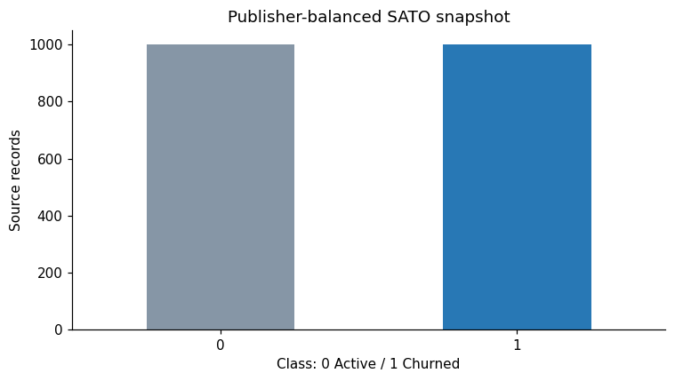
Worked calculation from the data:
Churned: 1000/2000=50,00%; Active: 1000/2000=50,00%
Interpretation: Each class has 1000 profiles. A constant prediction scores 50% without distinguishing customers, providing a simple reference.
4. What information is missing from training?
4.1. Count missing fields
Horizontal bars compare missing shares by column. For example, August service-type missingness is missing records/1400×100. Five rows illustrate 1=missing, 0=observed; the summary covers all thirteen inputs. Negative durations remain separate from source blanks at this stage.
Show Python codePython · [7]
missing = eda[FEATURES].isna().sum().sort_values()
sample(
eda[["aug_user_type", "sep_user_type"]].assign(aug_missing=eda.aug_user_type.isna().astype(int))
)
mt = pd.DataFrame(
{"field": missing.index, "missing": missing.values, "percent": 100 * missing.values / M}
)
table(mt)
fig, ax = plt.subplots(figsize=(9, 5))
(100 * missing / M).plot.barh(ax=ax, color="#2878b5")
ax.set(xlabel="Missing (%)", title="Training inputs: source blanks")
finish("missing")
mt.to_csv(OUT / "missing_summary.csv", index=False)
| aug_user_type | sep_user_type | aug_missing |
|---|---|---|
| 3G | 2G | 0 |
| Other | Other | 0 |
| 3G | 3G | 0 |
| 3G | 3G | 0 |
| 3G | 3G | 0 |
| field | missing | percent |
|---|---|---|
| network_age | 0 | 0,00 |
| Aggregate_Total_Rev | 0 | 0,00 |
| Aggregate_SMS_Rev | 0 | 0,00 |
| Aggregate_Data_Rev | 0 | 0,00 |
| Aggregate_Data_Vol | 0 | 0,00 |
| Aggregate_Calls | 0 | 0,00 |
| Aggregate_ONNET_REV | 0 | 0,00 |
| Aggregate_OFFNET_REV | 0 | 0,00 |
| Aggregate_complaint_count | 0 | 0,00 |
| aug_fav_a | 0 | 0,00 |
| sep_fav_a | 0 | 0,00 |
| sep_user_type | 134 | 9,57 |
| aug_user_type | 159 | 11,36 |
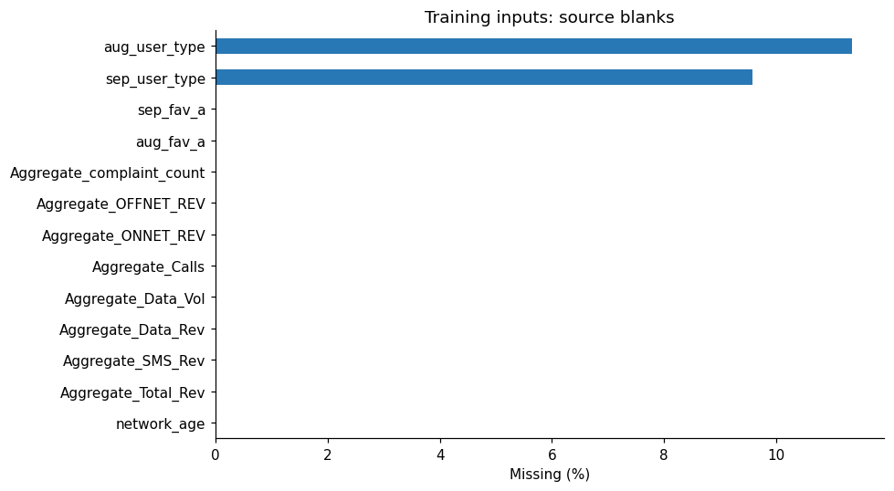
Worked calculation from the data:
aug_user_type: 159/1400×100=11,36%
Interpretation: Training has 293 blank fields. August service type lacks 159/1400 values (11,36%). These profiles are retained with a Missing category.
4.2. Do missing fields occur together?
A profile can lack several fields, so missing-cell totals differ from missing-profile totals. The display covers all 1400 training profiles and 13 inputs. Each vertical column is one profile and each horizontal row is one input. Hover to inspect the source row and field. Five records illustrate missing-field counts. Zoom into a region in the HTML chart to inspect the narrow profile columns. This reveals locations, not the cause of missingness.
Show Python codePython · [8]
sample(eda[["Class"]].assign(missing_fields=eda[FEATURES].isna().sum(axis=1)))
any_missing = eda[FEATURES].isna().any(axis=1)
heat = eda[FEATURES].isna().T.astype(int)
fig, ax = plt.subplots(figsize=(11, 5))
sns.heatmap(heat, cmap=["#edf2f7", "#2878b5"], xticklabels=False, cbar_kws={"ticks": [0, 1]}, ax=ax)
ax.set_title("All training rows: 1 = missing")
finish("missing_pattern")
| Class | missing_fields |
|---|---|
| 0 | 0 |
| 1 | 0 |
| 1 | 0 |
| 1 | 0 |
| 1 | 0 |
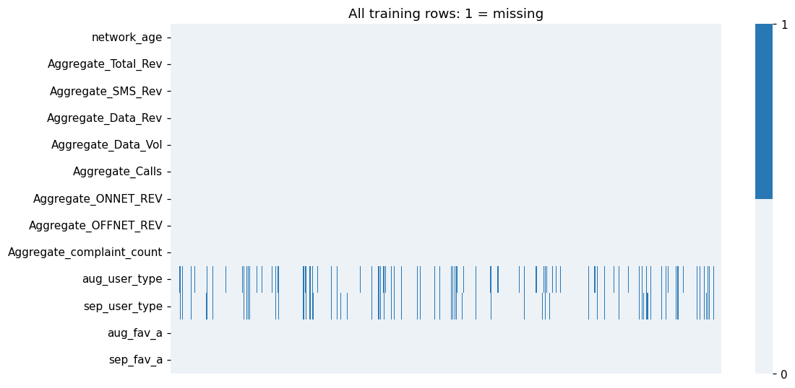
Worked calculation from the data:
At least one missing input: 181/1400=12,93%
Interpretation: 181/1400 training profiles lack at least one field. This is below the 293-cell total because a profile may lack multiple fields. Other information can still be useful.
5. How do service-use values vary?
Explore each of nine numerical inputs to see common values, spread and unusual observations.
How to read the summary:
| Statistic | Meaning |
|---|---|
count |
Number of observed values, excluding missing fields. |
mean |
Average: sum of observed values divided by their count. |
std |
Standard deviation: spread of values around the mean. |
min |
Smallest value. |
25% — Q1 |
The 25th percentile of the values sorted in ascending order. |
50% — median |
Middle value after sorting; for an even count, the average of the two middle values. |
75% — Q3 |
The 75th percentile of the values sorted in ascending order. |
max |
Largest value. |
Q1 and Q3 bound the middle half by sorted position. Their difference, Q3 − Q1, is the IQR used in section 5.2.
A histogram counts profiles in thirty value intervals. [a,b) includes a but excludes b; the final interval includes b. Recorded negatives remain visible before preparation.
Show Python codePython · [9]
table(eda[NUM].describe().T.reset_index(names="field"))
eda[NUM].describe().T.to_csv(OUT / "numeric_summary.csv")
| field | count | mean | std | min | 25% | 50% | 75% | max |
|---|---|---|---|---|---|---|---|---|
| network_age | 1400 | 1457,48 | 1312,05 | -8,00 | 278,75 | 1142,00 | 2261,75 | 5451,00 |
| Aggregate_Total_Rev | 1400 | 894,70 | 1179,93 | 4,91 | 256,21 | 619,22 | 1219,05 | 24438,83 |
| Aggregate_SMS_Rev | 1400 | 31,52 | 58,99 | 0,00 | 3,27 | 14,34 | 34,17 | 665,00 |
| Aggregate_Data_Rev | 1400 | 53,56 | 248,81 | 0,00 | 1,25 | 13,75 | 51,25 | 8295,00 |
| Aggregate_Data_Vol | 1400 | 2953193,59 | 9449406,14 | 0,10 | 3237,21 | 176029,80 | 1562888,06 | 155031212,80 |
| Aggregate_Calls | 1400 | 246,77 | 378,38 | 1,00 | 25,00 | 104,00 | 339,00 | 5727,00 |
| Aggregate_ONNET_REV | 1400 | 7438,86 | 17595,08 | 0,00 | 114,00 | 1976,50 | 7855,50 | 381174,00 |
| Aggregate_OFFNET_REV | 1400 | 16278,83 | 34067,38 | 0,00 | 1458,00 | 5097,50 | 16176,00 | 431440,00 |
| Aggregate_complaint_count | 1400 | 1,93 | 2,36 | 1,00 | 1,00 | 1,00 | 2,00 | 49,00 |
5.1.1. Distribution of network_age
The histogram shows common and unusual values. Each bar counts all profiles in its interval. Five members of the busiest interval illustrate the calculation; they alone do not determine the bar or represent the full dataset. This marginal view does not identify who left.
Show Python codePython · [10]
field = "network_age"
v = eda[field].dropna()
counts, edges = np.histogram(v, bins=30)
j = int(counts.argmax())
a, b = edges[j : j + 2]
mask = eda[field].ge(a) & (eda[field].le(b) if j == 29 else eda[field].lt(b))
sample(eda.loc[mask, [field, "Class"]])
right = "]" if j == 29 else ")"
fig, ax = plt.subplots(figsize=(9, 4))
ax.hist(v, bins=edges, color="#2878b5", edgecolor="white")
ax.set(xlabel=field, ylabel="Training records", title=field)
finish("hist_network_age")
| network_age | Class |
|---|---|
| 149 | 0 |
| 117 | 1 |
| 155 | 1 |
| 147 | 0 |
| 104 | 0 |
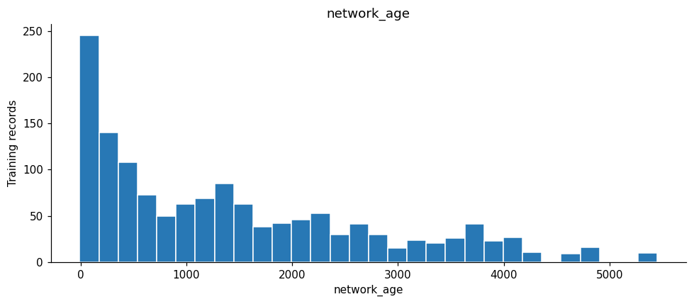
Worked calculation from the data:
Bin [-8,00;173,97): 245/1400=17,50%
Interpretation: The busiest training interval is -8,00–173,97, with 245/1400 profiles (17,50%). Mean=1457,48; median=1142,00. 3 negative durations need preparation.
5.1.2. Distribution of Aggregate_Total_Rev
The histogram shows common and unusual values. Each bar counts all profiles in its interval. Five members of the busiest interval illustrate the calculation; they alone do not determine the bar or represent the full dataset. This marginal view does not identify who left.
Show Python codePython · [11]
field = "Aggregate_Total_Rev"
v = eda[field].dropna()
counts, edges = np.histogram(v, bins=30)
j = int(counts.argmax())
a, b = edges[j : j + 2]
mask = eda[field].ge(a) & (eda[field].le(b) if j == 29 else eda[field].lt(b))
sample(eda.loc[mask, [field, "Class"]])
right = "]" if j == 29 else ")"
fig, ax = plt.subplots(figsize=(9, 4))
ax.hist(v, bins=edges, color="#2878b5", edgecolor="white")
ax.set(xlabel=field, ylabel="Training records", title=field)
finish("hist_Aggregate_Total_Rev")
| Aggregate_Total_Rev | Class |
|---|---|
| 152,45 | 0 |
| 135,38 | 1 |
| 682,79 | 1 |
| 155,57 | 1 |
| 242,17 | 1 |
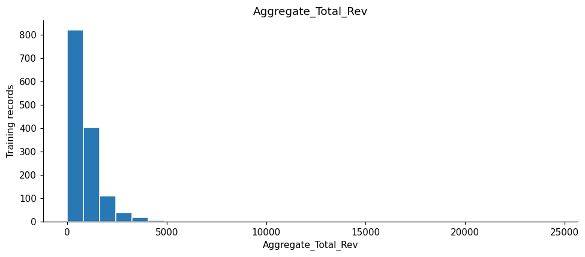
Worked calculation from the data:
Bin [4,91;819,37): 819/1400=58,50%
Interpretation: The busiest training interval is 4,91–819,37, with 819/1400 profiles (58,50%). Mean=894,70; median=619,22. A few large observations pull the mean above the median; read both to understand typical levels.
5.1.3. Distribution of Aggregate_SMS_Rev
The histogram shows common and unusual values. Each bar counts all profiles in its interval. Five members of the busiest interval illustrate the calculation; they alone do not determine the bar or represent the full dataset. This marginal view does not identify who left.
Show Python codePython · [12]
field = "Aggregate_SMS_Rev"
v = eda[field].dropna()
counts, edges = np.histogram(v, bins=30)
j = int(counts.argmax())
a, b = edges[j : j + 2]
mask = eda[field].ge(a) & (eda[field].le(b) if j == 29 else eda[field].lt(b))
sample(eda.loc[mask, [field, "Class"]])
right = "]" if j == 29 else ")"
fig, ax = plt.subplots(figsize=(9, 4))
ax.hist(v, bins=edges, color="#2878b5", edgecolor="white")
ax.set(xlabel=field, ylabel="Training records", title=field)
finish("hist_Aggregate_SMS_Rev")
| Aggregate_SMS_Rev | Class |
|---|---|
| 7,73 | 0 |
| 1,75 | 1 |
| 19,70 | 1 |
| 3,50 | 1 |
| 3,50 | 1 |
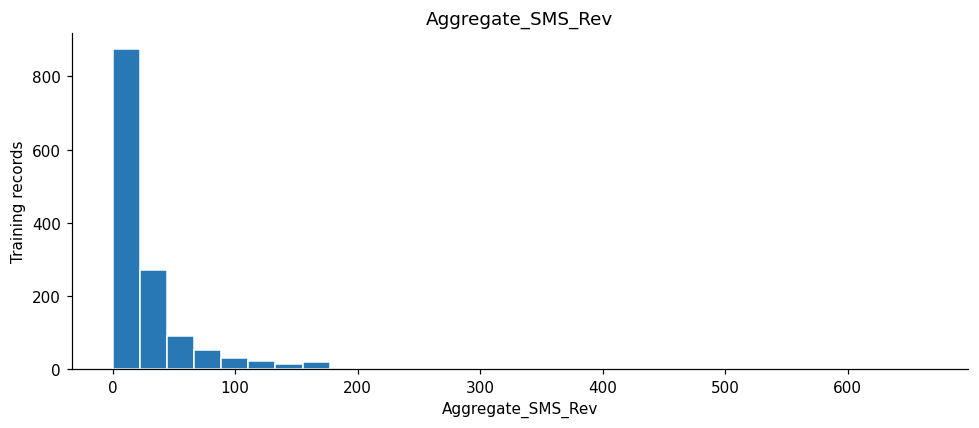
Worked calculation from the data:
Bin [0,00;22,17): 875/1400=62,50%
Interpretation: The busiest training interval is 0,00–22,17, with 875/1400 profiles (62,50%). Mean=31,52; median=14,34. A few large observations pull the mean above the median; read both to understand typical levels.
5.1.4. Distribution of Aggregate_Data_Rev
The histogram shows common and unusual values. Each bar counts all profiles in its interval. Five members of the busiest interval illustrate the calculation; they alone do not determine the bar or represent the full dataset. This marginal view does not identify who left.
Show Python codePython · [13]
field = "Aggregate_Data_Rev"
v = eda[field].dropna()
counts, edges = np.histogram(v, bins=30)
j = int(counts.argmax())
a, b = edges[j : j + 2]
mask = eda[field].ge(a) & (eda[field].le(b) if j == 29 else eda[field].lt(b))
sample(eda.loc[mask, [field, "Class"]])
right = "]" if j == 29 else ")"
fig, ax = plt.subplots(figsize=(9, 4))
ax.hist(v, bins=edges, color="#2878b5", edgecolor="white")
ax.set(xlabel=field, ylabel="Training records", title=field)
finish("hist_Aggregate_Data_Rev")
| Aggregate_Data_Rev | Class |
|---|---|
| 1,25 | 0 |
| 0,00 | 1 |
| 20,00 | 1 |
| 81,25 | 1 |
| 56,25 | 1 |
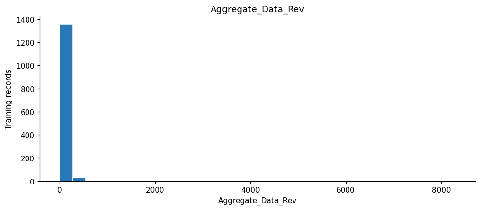
Worked calculation from the data:
Bin [0,00;276,50): 1359/1400=97,07%
Interpretation: The busiest training interval is 0,00–276,50, with 1359/1400 profiles (97,07%). Mean=53,56; median=13,75. A few large observations pull the mean above the median; read both to understand typical levels.
5.1.5. Distribution of Aggregate_Data_Vol
The histogram shows common and unusual values. Each bar counts all profiles in its interval. Five members of the busiest interval illustrate the calculation; they alone do not determine the bar or represent the full dataset. This marginal view does not identify who left.
Show Python codePython · [14]
field = "Aggregate_Data_Vol"
v = eda[field].dropna()
counts, edges = np.histogram(v, bins=30)
j = int(counts.argmax())
a, b = edges[j : j + 2]
mask = eda[field].ge(a) & (eda[field].le(b) if j == 29 else eda[field].lt(b))
sample(eda.loc[mask, [field, "Class"]])
right = "]" if j == 29 else ")"
fig, ax = plt.subplots(figsize=(9, 4))
ax.hist(v, bins=edges, color="#2878b5", edgecolor="white")
ax.set(xlabel=field, ylabel="Training records", title=field)
finish("hist_Aggregate_Data_Vol")
| Aggregate_Data_Vol | Class |
|---|---|
| 1,92 | 0 |
| 365237,51 | 1 |
| 692988,93 | 1 |
| 109394,71 | 1 |
| 26,14 | 1 |
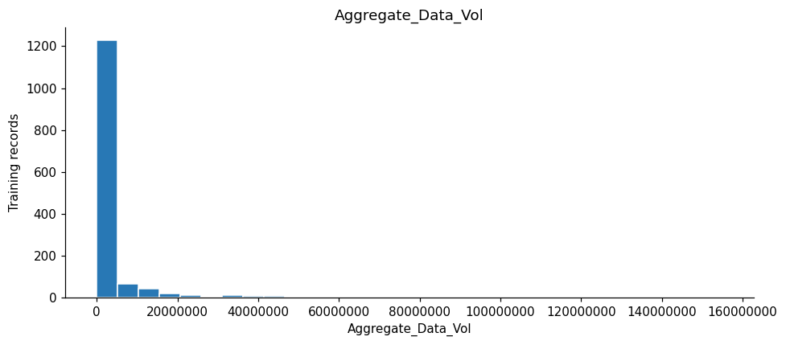
Worked calculation from the data:
Bin [0,10;5167707,19): 1228/1400=87,71%
Interpretation: The busiest training interval is 0,10–5167707,19, with 1228/1400 profiles (87,71%). Mean=2953193,59; median=176029,80. A few large observations pull the mean above the median; read both to understand typical levels.
5.1.6. Distribution of Aggregate_Calls
The histogram shows common and unusual values. Each bar counts all profiles in its interval. Five members of the busiest interval illustrate the calculation; they alone do not determine the bar or represent the full dataset. This marginal view does not identify who left.
Show Python codePython · [15]
field = "Aggregate_Calls"
v = eda[field].dropna()
counts, edges = np.histogram(v, bins=30)
j = int(counts.argmax())
a, b = edges[j : j + 2]
mask = eda[field].ge(a) & (eda[field].le(b) if j == 29 else eda[field].lt(b))
sample(eda.loc[mask, [field, "Class"]])
right = "]" if j == 29 else ")"
fig, ax = plt.subplots(figsize=(9, 4))
ax.hist(v, bins=edges, color="#2878b5", edgecolor="white")
ax.set(xlabel=field, ylabel="Training records", title=field)
finish("hist_Aggregate_Calls")
| Aggregate_Calls | Class |
|---|---|
| 44 | 0 |
| 11 | 1 |
| 27 | 1 |
| 3 | 1 |
| 20 | 1 |
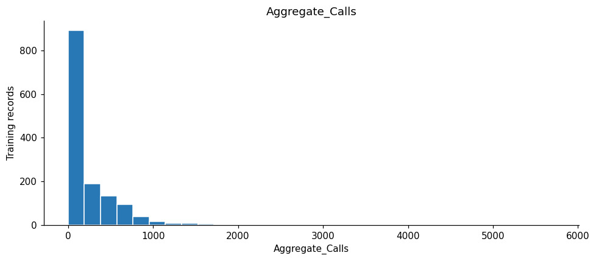
Worked calculation from the data:
Bin [1,00;191,87): 891/1400=63,64%
Interpretation: The busiest training interval is 1,00–191,87, with 891/1400 profiles (63,64%). Mean=246,77; median=104,00. A few large observations pull the mean above the median; read both to understand typical levels.
5.1.7. Distribution of Aggregate_ONNET_REV
The histogram shows common and unusual values. Each bar counts all profiles in its interval. Five members of the busiest interval illustrate the calculation; they alone do not determine the bar or represent the full dataset. This marginal view does not identify who left.
Show Python codePython · [16]
field = "Aggregate_ONNET_REV"
v = eda[field].dropna()
counts, edges = np.histogram(v, bins=30)
j = int(counts.argmax())
a, b = edges[j : j + 2]
mask = eda[field].ge(a) & (eda[field].le(b) if j == 29 else eda[field].lt(b))
sample(eda.loc[mask, [field, "Class"]])
right = "]" if j == 29 else ")"
fig, ax = plt.subplots(figsize=(9, 4))
ax.hist(v, bins=edges, color="#2878b5", edgecolor="white")
ax.set(xlabel=field, ylabel="Training records", title=field)
finish("hist_Aggregate_ONNET_REV")
| Aggregate_ONNET_REV | Class |
|---|---|
| 1464 | 0 |
| 24 | 1 |
| 846 | 1 |
| 0 | 1 |
| 2900 | 1 |
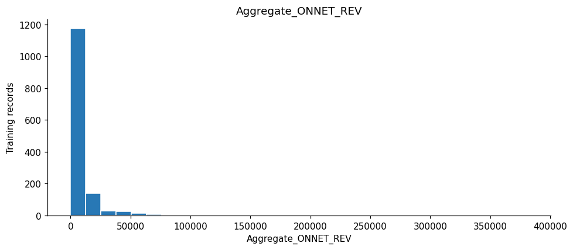
Worked calculation from the data:
Bin [0,00;12705,80): 1174/1400=83,86%
Interpretation: The busiest training interval is 0,00–12705,80, with 1174/1400 profiles (83,86%). Mean=7438,86; median=1976,50. A few large observations pull the mean above the median; read both to understand typical levels.
5.1.8. Distribution of Aggregate_OFFNET_REV
The histogram shows common and unusual values. Each bar counts all profiles in its interval. Five members of the busiest interval illustrate the calculation; they alone do not determine the bar or represent the full dataset. This marginal view does not identify who left.
Show Python codePython · [17]
field = "Aggregate_OFFNET_REV"
v = eda[field].dropna()
counts, edges = np.histogram(v, bins=30)
j = int(counts.argmax())
a, b = edges[j : j + 2]
mask = eda[field].ge(a) & (eda[field].le(b) if j == 29 else eda[field].lt(b))
sample(eda.loc[mask, [field, "Class"]])
right = "]" if j == 29 else ")"
fig, ax = plt.subplots(figsize=(9, 4))
ax.hist(v, bins=edges, color="#2878b5", edgecolor="white")
ax.set(xlabel=field, ylabel="Training records", title=field)
finish("hist_Aggregate_OFFNET_REV")
| Aggregate_OFFNET_REV | Class |
|---|---|
| 2206 | 0 |
| 4893 | 1 |
| 10522 | 1 |
| 537 | 1 |
| 4493 | 1 |
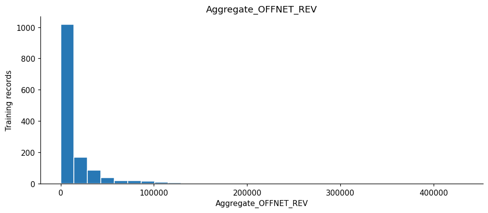
Worked calculation from the data:
Bin [0,00;14381,33): 1018/1400=72,71%
Interpretation: The busiest training interval is 0,00–14381,33, with 1018/1400 profiles (72,71%). Mean=16278,83; median=5097,50. A few large observations pull the mean above the median; read both to understand typical levels.
5.1.9. Distribution of Aggregate_complaint_count
The histogram shows common and unusual values. Each bar counts all profiles in its interval. Five members of the busiest interval illustrate the calculation; they alone do not determine the bar or represent the full dataset. This marginal view does not identify who left.
Show Python codePython · [18]
field = "Aggregate_complaint_count"
v = eda[field].dropna()
counts, edges = np.histogram(v, bins=30)
j = int(counts.argmax())
a, b = edges[j : j + 2]
mask = eda[field].ge(a) & (eda[field].le(b) if j == 29 else eda[field].lt(b))
sample(eda.loc[mask, [field, "Class"]])
right = "]" if j == 29 else ")"
fig, ax = plt.subplots(figsize=(9, 4))
ax.hist(v, bins=edges, color="#2878b5", edgecolor="white")
ax.set(xlabel=field, ylabel="Training records", title=field)
finish("hist_Aggregate_complaint_count")
| Aggregate_complaint_count | Class |
|---|---|
| 2 | 0 |
| 1 | 1 |
| 2 | 1 |
| 1 | 1 |
| 2 | 1 |
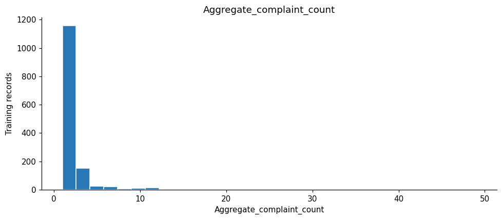
Worked calculation from the data:
Bin [1,00;2,60): 1157/1400=82,64%
Interpretation: The busiest training interval is 1,00–2,60, with 1157/1400 profiles (82,64%). Mean=1,93; median=1,00. A few large observations pull the mean above the median; read both to understand typical levels.
5.2. Outlier Detection with IQR
After examining each distribution, ask how many profiles lie far from the main range. Apply the same IQR rule to all nine numerical inputs for a complete comparison.
Calculation: Q1 and Q3 are the 25th and 75th percentiles, bounding the middle half. IQR = Q3 − Q1. The lower threshold is Q1 − 1,50 × IQR; the upper is Q3 + 1,50 × IQR. Flag values strictly outside these thresholds. Flagged percentage = flagged profiles / observed profiles in the column × 100.
First inspect five revenue profiles: two outside and three inside the thresholds, with a worked substitution. These deliberately chosen examples illustrate both cases rather than estimate their proportions. The complete table covers all nine numerical inputs using training data.
Read the outlier display: each panel shows one input on its own scale. The box spans Q1–Q3 with a median line. Whiskers reach the most extreme observed values still inside the IQR thresholds; they need not equal the thresholds. Red points beyond the whiskers are IQR outliers. Dashed orange lines mark both theoretical thresholds. An annotation gives outlier count and percentage.
The plots show which side contains unusual observations and how far they lie from the middle. Do not compare panel heights as shared units. Large extremes may compress the box; zoom a panel in the HTML report to inspect its center.
Interpretation: a flag prompts inspection; it is not proof of error or a reason for automatic removal. Impossible negative service duration has its separate meaning-based check in section 2.2.
Show Python codePython · [19]
iqr_rows = []
for field in NUM:
values = eda[field].dropna()
q1, q3 = values.quantile([0.25, 0.75])
iqr = q3 - q1
lower = q1 - 1.5 * iqr
upper = q3 + 1.5 * iqr
flags = (values < lower) | (values > upper)
iqr_rows.append(
{
"field": field,
"observed": len(values),
"Q1": q1,
"Q3": q3,
"IQR": iqr,
"lower_threshold": lower,
"upper_threshold": upper,
"flagged_count": int(flags.sum()),
"flagged_percent": 100 * flags.mean(),
}
)
outlier_summary = pd.DataFrame(iqr_rows)
revenue_rule = outlier_summary.set_index("field").loc["Aggregate_Total_Rev"]
revenue_values = eda.Aggregate_Total_Rev
revenue_flags = (revenue_values < revenue_rule.lower_threshold) | (
revenue_values > revenue_rule.upper_threshold
)
example_ids = list(revenue_flags[revenue_flags].head(2).index) + list(
revenue_flags[~revenue_flags].head(3).index
)
examples = eda.loc[example_ids, ["Aggregate_Total_Rev"]].copy()
examples["IQR_flag"] = revenue_flags.loc[example_ids]
table(examples.reset_index(names="source_row_id"))
table(outlier_summary)
outlier_summary.to_csv(OUT / "outlier_summary.csv", index=False)
first_value = examples.Aggregate_Total_Rev.iloc[0]
short_names = [
"Service duration",
"Total revenue",
"SMS revenue",
"Data revenue",
"Data volume",
"Call count",
"On-network revenue",
"Off-network revenue",
"Complaint count",
]
fig, axes = plt.subplots(3, 3, figsize=(14, 12))
for ax, field, title in zip(axes.flat, NUM, short_names):
values = eda[field].dropna()
rule = outlier_summary.set_index("field").loc[field]
ax.boxplot(
values,
vert=True,
whis=1.5,
patch_artist=True,
boxprops={"facecolor": "#bcd8ec", "edgecolor": "#2878b5"},
medianprops={"color": "#243746", "linewidth": 2},
flierprops={
"marker": "o",
"markersize": 3,
"markerfacecolor": "#bf4b45",
"markeredgecolor": "#bf4b45",
"alpha": 0.6,
},
)
ax.axhline(rule.lower_threshold, color="#b97722", linestyle="--", linewidth=1)
ax.axhline(rule.upper_threshold, color="#b97722", linestyle="--", linewidth=1)
ax.set_title(title, pad=28)
ax.text(
0.5,
1.02,
f"Outliers: {int(rule.flagged_count)}/{int(rule.observed)} ({rule.flagged_percent:.2f}%)",
transform=ax.transAxes,
ha="center",
fontsize=9,
)
ax.set_xticks([])
ax.set_ylabel("Source value")
ax.grid(axis="y", alpha=0.15)
finish("outliers")
highest = outlier_summary.sort_values("flagged_percent").iloc[-1]
| source_row_id | Aggregate_Total_Rev | IQR_flag |
|---|---|---|
| 1449 | 3124,07 | True |
| 1795 | 2916,79 | True |
| 1113 | 152,45 | False |
| 1531 | 135,38 | False |
| 1444 | 1367,68 | False |
| field | observed | Q1 | Q3 | IQR | lower_threshold | upper_threshold | flagged_count | flagged_percent |
|---|---|---|---|---|---|---|---|---|
| network_age | 1400 | 278,75 | 2261,75 | 1983,00 | -2695,75 | 5236,25 | 10 | 0,71 |
| Aggregate_Total_Rev | 1400 | 256,21 | 1219,05 | 962,83 | -1188,04 | 2663,30 | 56 | 4,00 |
| Aggregate_SMS_Rev | 1400 | 3,27 | 34,17 | 30,91 | -43,09 | 80,53 | 129 | 9,21 |
| Aggregate_Data_Rev | 1400 | 1,25 | 51,25 | 50,00 | -73,75 | 126,25 | 133 | 9,50 |
| Aggregate_Data_Vol | 1400 | 3237,21 | 1562888,06 | 1559650,84 | -2336239,06 | 3902364,32 | 202 | 14,43 |
| Aggregate_Calls | 1400 | 25,00 | 339,00 | 314,00 | -446,00 | 810,00 | 81 | 5,79 |
| Aggregate_ONNET_REV | 1400 | 114,00 | 7855,50 | 7741,50 | -11498,25 | 19467,75 | 133 | 9,50 |
| Aggregate_OFFNET_REV | 1400 | 1458,00 | 16176,00 | 14718,00 | -20619,00 | 38253,00 | 148 | 10,57 |
| Aggregate_complaint_count | 1400 | 1,00 | 2,00 | 1,00 | -0,50 | 3,50 | 136 | 9,71 |
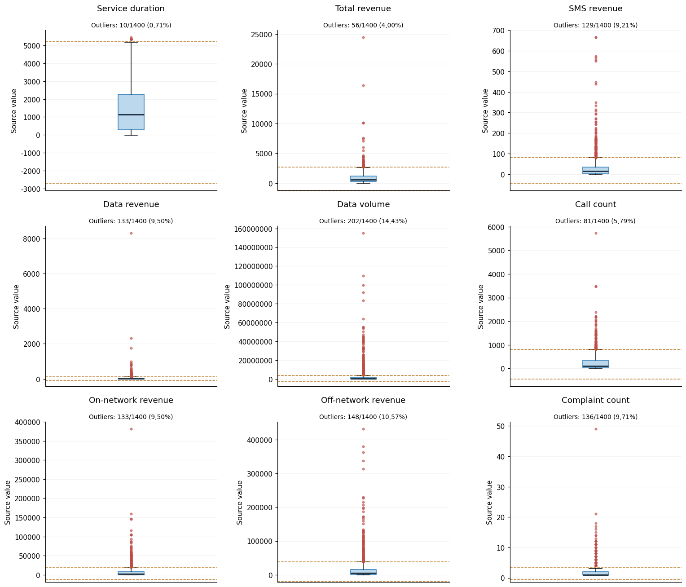
Worked calculation from the data:
IQR = 1219,05 − 256,21 = 962,83; lower = 256,21 − 1,50 × 962,83 = -1188,04; upper = 1219,05 + 1,50 × 962,83 = 2663,30; flagged = 56/1400 × 100 = 4,00%
3124,07 > 2663,30: True → IQR_flag = True
Interpretation: Aggregate_Data_Vol has the highest flagged share: 202/1400 (14,43%). Each input uses its own distribution-based thresholds. Flags prompt inspection rather than removal; impossible negative duration needs a separate meaning-based check.
6. Which service categories do customers belong to?
These four inputs identify groups rather than measured amounts. Count profiles by service type and most-contacted other network for each month.
6.1. Counts by aug_user_type
Horizontal bars count profiles within each category among 1400 training records. Five examples precede complete counts. Share=group count/1400. Missing is unavailable information; Other is a recorded category.
Show Python codePython · [20]
field = "aug_user_type"
labels = eda[field].fillna("Missing")
freq = labels.value_counts()
focus = freq.idxmax()
sample(eda.loc[labels.eq(focus), [field, "Class"]])
table(freq.rename_axis("category").reset_index(name="records"))
fig, ax = plt.subplots(figsize=(9, max(3.5, len(freq) * 0.35)))
freq.sort_values().plot.barh(ax=ax, color="#2878b5")
ax.set(xlabel="Training profiles", title="Frequency: " + field)
finish("cat_aug_user_type")
| aug_user_type | Class |
|---|---|
| 3G | 0 |
| 3G | 1 |
| 3G | 1 |
| 3G | 1 |
| 3G | 1 |
| category | records |
|---|---|
| 3G | 684 |
| 2G | 295 |
| Other | 262 |
| Missing | 159 |
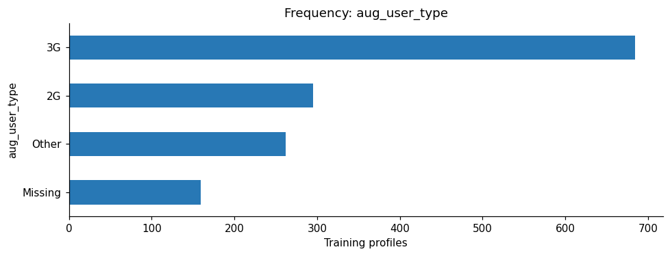
Worked calculation from the data:
3G: 684/1400=48,86%
Interpretation: 3G is the largest group: 684/1400 profiles (48,86%). This measures group size; section 7 examines each group’s Churned share.
6.2. Counts by sep_user_type
Horizontal bars count profiles within each category among 1400 training records. Five examples precede complete counts. Share=group count/1400. Missing is unavailable information; Other is a recorded category.
Show Python codePython · [21]
field = "sep_user_type"
labels = eda[field].fillna("Missing")
freq = labels.value_counts()
focus = freq.idxmax()
sample(eda.loc[labels.eq(focus), [field, "Class"]])
table(freq.rename_axis("category").reset_index(name="records"))
fig, ax = plt.subplots(figsize=(9, max(3.5, len(freq) * 0.35)))
freq.sort_values().plot.barh(ax=ax, color="#2878b5")
ax.set(xlabel="Training profiles", title="Frequency: " + field)
finish("cat_sep_user_type")
| sep_user_type | Class |
|---|---|
| 3G | 1 |
| 3G | 1 |
| 3G | 1 |
| 3G | 1 |
| 3G | 0 |
| category | records |
|---|---|
| 3G | 731 |
| 2G | 273 |
| Other | 262 |
| Missing | 134 |
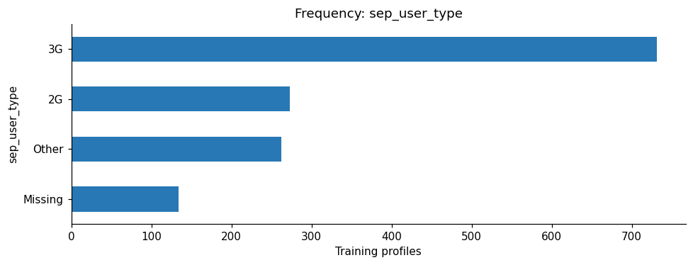
Worked calculation from the data:
3G: 731/1400=52,21%
Interpretation: 3G is the largest group: 731/1400 profiles (52,21%). This measures group size; section 7 examines each group’s Churned share.
6.3. Counts by aug_fav_a
Horizontal bars count profiles within each category among 1400 training records. Five examples precede complete counts. Share=group count/1400. Missing is unavailable information; Other is a recorded category.
Show Python codePython · [22]
field = "aug_fav_a"
labels = eda[field].fillna("Missing")
freq = labels.value_counts()
focus = freq.idxmax()
sample(eda.loc[labels.eq(focus), [field, "Class"]])
table(freq.rename_axis("category").reset_index(name="records"))
fig, ax = plt.subplots(figsize=(9, max(3.5, len(freq) * 0.35)))
freq.sort_values().plot.barh(ax=ax, color="#2878b5")
ax.set(xlabel="Training profiles", title="Frequency: " + field)
finish("cat_aug_fav_a")
| aug_fav_a | Class |
|---|---|
| ptcl | 1 |
| ptcl | 1 |
| ptcl | 1 |
| ptcl | 1 |
| ptcl | 0 |
| category | records |
|---|---|
| ptcl | 335 |
| ufone | 314 |
| telenor | 198 |
| mobilink | 190 |
| zong | 176 |
| warid | 144 |
| 0 | 43 |
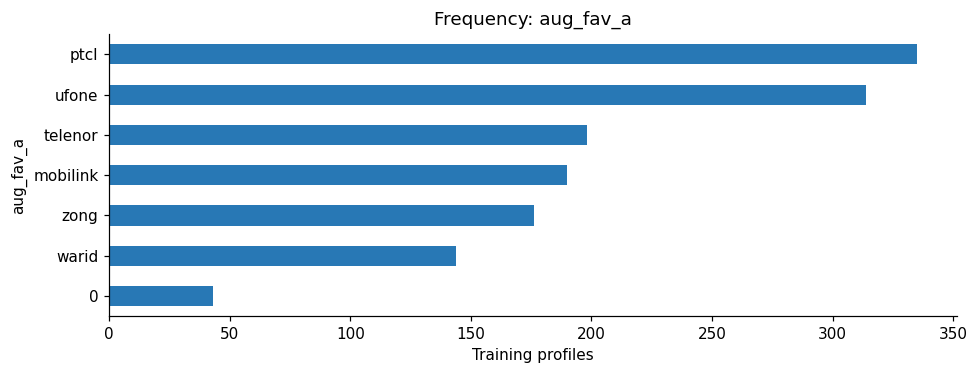
Worked calculation from the data:
ptcl: 335/1400=23,93%
Interpretation: ptcl is the largest group: 335/1400 profiles (23,93%). This measures group size; section 7 examines each group’s Churned share.
6.4. Counts by sep_fav_a
Horizontal bars count profiles within each category among 1400 training records. Five examples precede complete counts. Share=group count/1400. Missing is unavailable information; Other is a recorded category.
Show Python codePython · [23]
field = "sep_fav_a"
labels = eda[field].fillna("Missing")
freq = labels.value_counts()
focus = freq.idxmax()
sample(eda.loc[labels.eq(focus), [field, "Class"]])
table(freq.rename_axis("category").reset_index(name="records"))
fig, ax = plt.subplots(figsize=(9, max(3.5, len(freq) * 0.35)))
freq.sort_values().plot.barh(ax=ax, color="#2878b5")
ax.set(xlabel="Training profiles", title="Frequency: " + field)
finish("cat_sep_fav_a")
| sep_fav_a | Class |
|---|---|
| ufone | 0 |
| ufone | 1 |
| ufone | 1 |
| ufone | 0 |
| ufone | 1 |
| category | records |
|---|---|
| ufone | 834 |
| ptcl | 306 |
| mobilink | 95 |
| telenor | 57 |
| warid | 55 |
| zong | 53 |
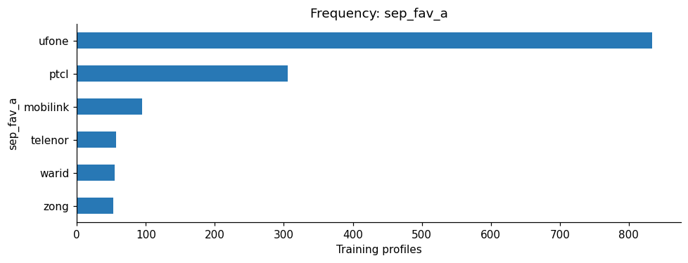
Worked calculation from the data:
ufone: 834/1400=59,57%
Interpretation: ufone is the largest group: 834/1400 profiles (59,57%). This measures group size; section 7 examines each group’s Churned share.
7. How do Active and Churned profiles differ?
Beyond category sizes, examine the share of Churned profiles within each group. Read both count and share: a small group's percentage changes more when a few records change. These balanced-sample associations can suggest useful inputs, but do not establish why customers left.
7.1.1. Churned shares by aug_user_type
For each category, calculate Churned profiles/group size×100. n, positive and rate mean group size, Churned count and share. Rates account for unequal group sizes; the five examples illustrate labels rather than the full denominator.
Show Python codePython · [24]
field = "aug_user_type"
labels = eda[field].fillna("Missing")
rates = (
eda.assign(group=labels)
.groupby("group")
.Class.agg(n="size", positive="sum", rate="mean")
.sort_values("rate")
)
focus = rates.index[-1]
r = rates.loc[focus]
sample(eda.loc[labels.eq(focus), [field, "Class"]])
table(rates.reset_index())
fig, ax = plt.subplots(figsize=(9, max(3.5, len(rates) * 0.35)))
(100 * rates.rate).plot.barh(ax=ax, color="#2878b5")
ax.set(
xlabel="Churned share in balanced training sample (%)",
xlim=(0, 100),
title="Sample association: " + field,
)
finish("rate_aug_user_type")
| aug_user_type | Class |
|---|---|
| 2G | 1 |
| 2G | 1 |
| 2G | 0 |
| 2G | 0 |
| 2G | 0 |
| group | Group size | Churned count | Churned share |
|---|---|---|---|
| 3G | 684 | 304 | 0,44 |
| Missing | 159 | 74 | 0,47 |
| Other | 262 | 151 | 0,58 |
| 2G | 295 | 171 | 0,58 |
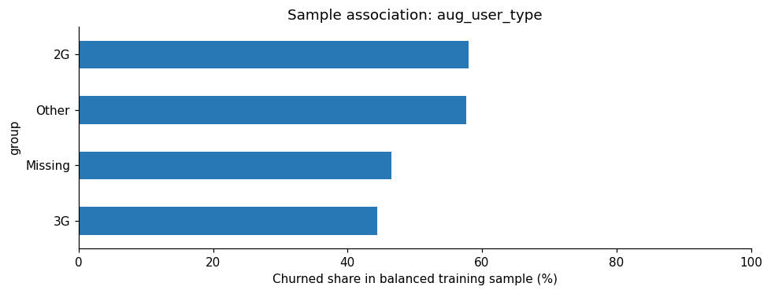
Worked calculation from the data:
2G: 171/295=57,97%
Interpretation: 2G has 171/295 Churned profiles (57,97%), versus 304/684 (44,44%) in 3G. The sample gap is 13,52 percentage points. Read group sizes alongside percentages.
7.1.2. Churned shares by sep_user_type
For each category, calculate Churned profiles/group size×100. n, positive and rate mean group size, Churned count and share. Rates account for unequal group sizes; the five examples illustrate labels rather than the full denominator.
Show Python codePython · [25]
field = "sep_user_type"
labels = eda[field].fillna("Missing")
rates = (
eda.assign(group=labels)
.groupby("group")
.Class.agg(n="size", positive="sum", rate="mean")
.sort_values("rate")
)
focus = rates.index[-1]
r = rates.loc[focus]
sample(eda.loc[labels.eq(focus), [field, "Class"]])
table(rates.reset_index())
fig, ax = plt.subplots(figsize=(9, max(3.5, len(rates) * 0.35)))
(100 * rates.rate).plot.barh(ax=ax, color="#2878b5")
ax.set(
xlabel="Churned share in balanced training sample (%)",
xlim=(0, 100),
title="Sample association: " + field,
)
finish("rate_sep_user_type")
| sep_user_type | Class |
|---|---|
| 2G | 0 |
| 2G | 1 |
| 2G | 1 |
| 2G | 0 |
| 2G | 0 |
| group | Group size | Churned count | Churned share |
|---|---|---|---|
| Missing | 134 | 60 | 0,45 |
| 3G | 731 | 331 | 0,45 |
| Other | 262 | 151 | 0,58 |
| 2G | 273 | 158 | 0,58 |
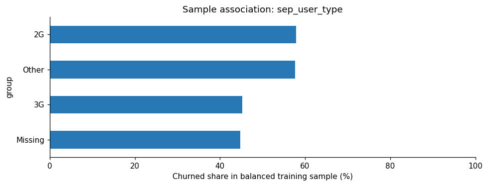
Worked calculation from the data:
2G: 158/273=57,88%
Interpretation: 2G has 158/273 Churned profiles (57,88%), versus 60/134 (44,78%) in Missing. The sample gap is 13,10 percentage points. Read group sizes alongside percentages.
7.1.3. Churned shares by aug_fav_a
For each category, calculate Churned profiles/group size×100. n, positive and rate mean group size, Churned count and share. Rates account for unequal group sizes; the five examples illustrate labels rather than the full denominator.
Show Python codePython · [26]
field = "aug_fav_a"
labels = eda[field].fillna("Missing")
rates = (
eda.assign(group=labels)
.groupby("group")
.Class.agg(n="size", positive="sum", rate="mean")
.sort_values("rate")
)
focus = rates.index[-1]
r = rates.loc[focus]
sample(eda.loc[labels.eq(focus), [field, "Class"]])
table(rates.reset_index())
fig, ax = plt.subplots(figsize=(9, max(3.5, len(rates) * 0.35)))
(100 * rates.rate).plot.barh(ax=ax, color="#2878b5")
ax.set(
xlabel="Churned share in balanced training sample (%)",
xlim=(0, 100),
title="Sample association: " + field,
)
finish("rate_aug_fav_a")
| aug_fav_a | Class |
|---|---|
| ptcl | 1 |
| ptcl | 1 |
| ptcl | 1 |
| ptcl | 1 |
| ptcl | 0 |
| group | Group size | Churned count | Churned share |
|---|---|---|---|
| 0 | 43 | 13 | 0,30 |
| zong | 176 | 73 | 0,41 |
| telenor | 198 | 87 | 0,44 |
| warid | 144 | 67 | 0,47 |
| ufone | 314 | 160 | 0,51 |
| mobilink | 190 | 97 | 0,51 |
| ptcl | 335 | 203 | 0,61 |
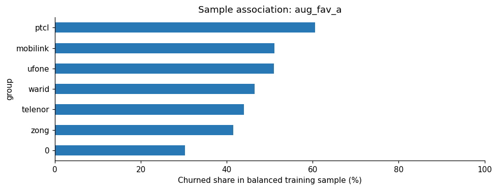
Worked calculation from the data:
ptcl: 203/335=60,60%
Interpretation: ptcl has 203/335 Churned profiles (60,60%), versus 13/43 (30,23%) in 0. The sample gap is 30,36 percentage points. Read group sizes alongside percentages.
7.1.4. Churned shares by sep_fav_a
For each category, calculate Churned profiles/group size×100. n, positive and rate mean group size, Churned count and share. Rates account for unequal group sizes; the five examples illustrate labels rather than the full denominator.
Show Python codePython · [27]
field = "sep_fav_a"
labels = eda[field].fillna("Missing")
rates = (
eda.assign(group=labels)
.groupby("group")
.Class.agg(n="size", positive="sum", rate="mean")
.sort_values("rate")
)
focus = rates.index[-1]
r = rates.loc[focus]
sample(eda.loc[labels.eq(focus), [field, "Class"]])
table(rates.reset_index())
fig, ax = plt.subplots(figsize=(9, max(3.5, len(rates) * 0.35)))
(100 * rates.rate).plot.barh(ax=ax, color="#2878b5")
ax.set(
xlabel="Churned share in balanced training sample (%)",
xlim=(0, 100),
title="Sample association: " + field,
)
finish("rate_sep_fav_a")
| sep_fav_a | Class |
|---|---|
| ptcl | 1 |
| ptcl | 1 |
| ptcl | 1 |
| ptcl | 1 |
| ptcl | 1 |
| group | Group size | Churned count | Churned share |
|---|---|---|---|
| ufone | 834 | 293 | 0,35 |
| warid | 55 | 35 | 0,64 |
| telenor | 57 | 37 | 0,65 |
| mobilink | 95 | 63 | 0,66 |
| zong | 53 | 40 | 0,75 |
| ptcl | 306 | 232 | 0,76 |
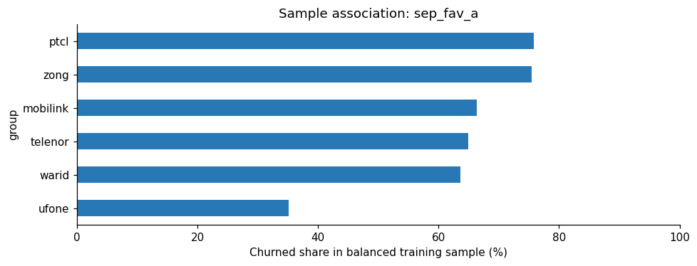
Worked calculation from the data:
ptcl: 232/306=75,82%
Interpretation: ptcl has 232/306 Churned profiles (75,82%), versus 293/834 (35,13%) in ufone. The sample gap is 40,69 percentage points. Read group sizes alongside percentages.
7.2. Which measurements tend to move together?
Each correlation cell gives Pearson r between −1 and 1. Positive values describe measurements that tend to rise together; negative values describe opposite movement; values near zero indicate weak linear association.
Five revenue–call pairs illustrate the data. The formula divides centered cross-products by the product of centered vector lengths, using all complete training pairs. Correlation does not establish cause.
Show Python codePython · [28]
p = eda[["Aggregate_Total_Rev", "Aggregate_Calls"]].dropna()
a = p.Aggregate_Total_Rev
b = p.Aggregate_Calls
num = ((a - a.mean()) * (b - b.mean())).sum()
den = np.sqrt(((a - a.mean()) ** 2).sum() * ((b - b.mean()) ** 2).sum())
sample(p)
fig, ax = plt.subplots(figsize=(11, 8))
sns.heatmap(eda[NUM].corr(), vmin=-1, vmax=1, cmap="vlag", annot=True, fmt=".2f", ax=ax)
ax.set_title("Training numerical Pearson correlations")
finish("corr")
| Aggregate_Total_Rev | Aggregate_Calls |
|---|---|
| 152,45 | 44 |
| 135,38 | 11 |
| 1367,68 | 198 |
| 682,79 | 27 |
| 155,57 | 3 |
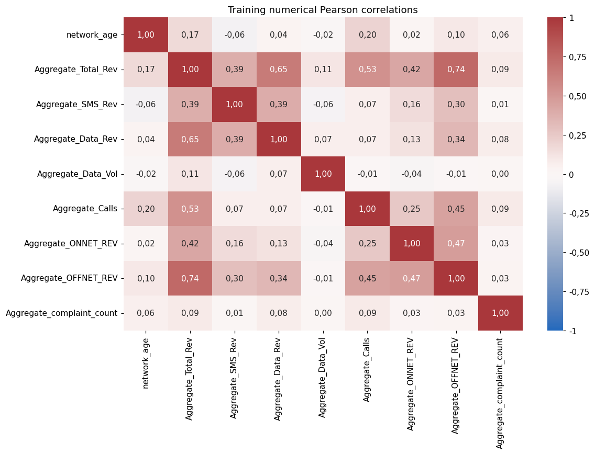
Worked calculation from the data:
r=332603604,45/624610315,96=0,53; complete pairs=1400
Interpretation: Total revenue and call count have r≈0,53: larger call counts tend to accompany higher revenue, with substantial variation. This does not establish the cause of staying or leaving.
8. EDA summary
The source has 2000 profiles, thirteen inputs and one balanced Class label. Training has 293 missing cells across 181 of 1400 profiles. Source blanks, Other and undocumented code '0' are distinct.
Five source durations are negative. Statistical IQR flags alone do not prove errors. Data volume has the largest training outlier share: 202/1400 (14,43%). Read means and medians together for long-tailed measurements.
Category churn shares vary within this balanced sample. Revenue and call count have Pearson r≈0,53. Associations establish neither causes nor population churn prevalence. Customer identifiers, label timing and some units remain unspecified.